Run on 12 Oct 2026 at 13:39:43. 4 of 4 figures and 8 of 8 tables produced in this run.
PASS, output/figure1_grade5.png was produced
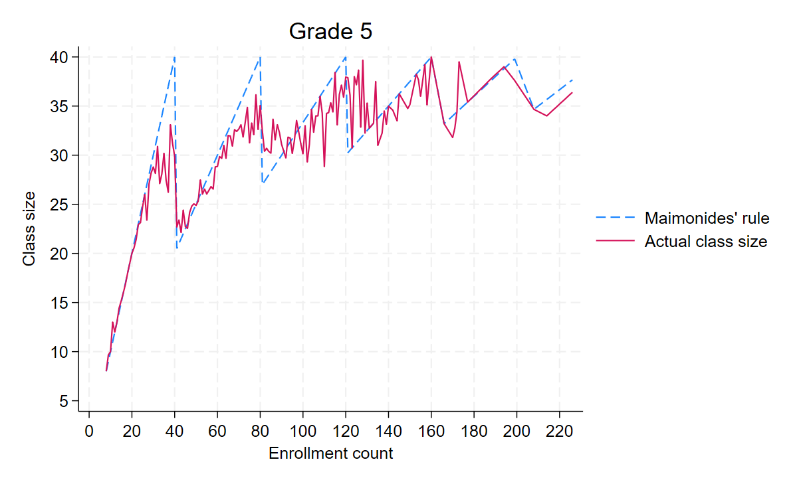
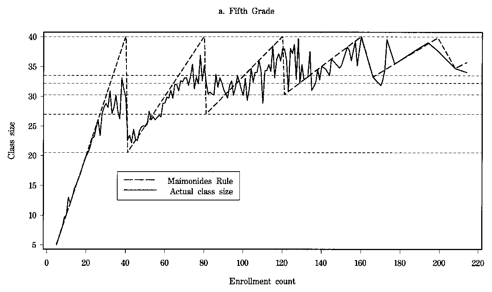
Actual class size should follow the dashed rule and drop sharply just past 40, 80 and 120, by less than the rule says. Ours starts at enrollment 8, not 5, because we drop the one school at 5, and we leave out the paper's horizontal lines.
PASS, output/figure1_grade4.png was produced
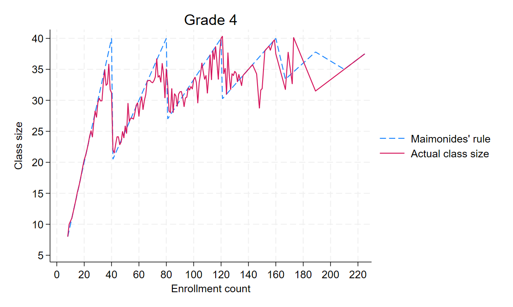
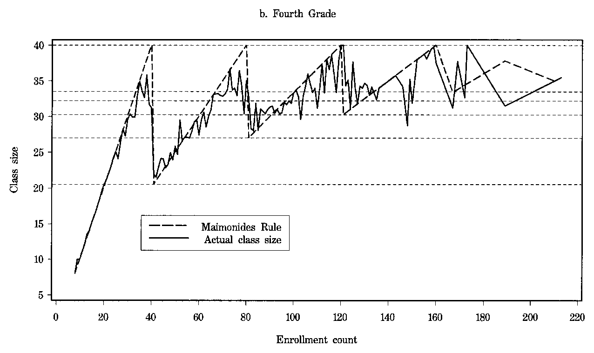
Same pattern as grade 5. Actual class size tracks the dashed rule and drops just past 40, 80 and 120. We leave out the paper's horizontal lines.
PASS, output/figure2_grade5.png was produced
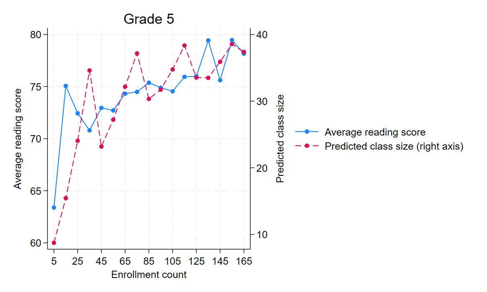
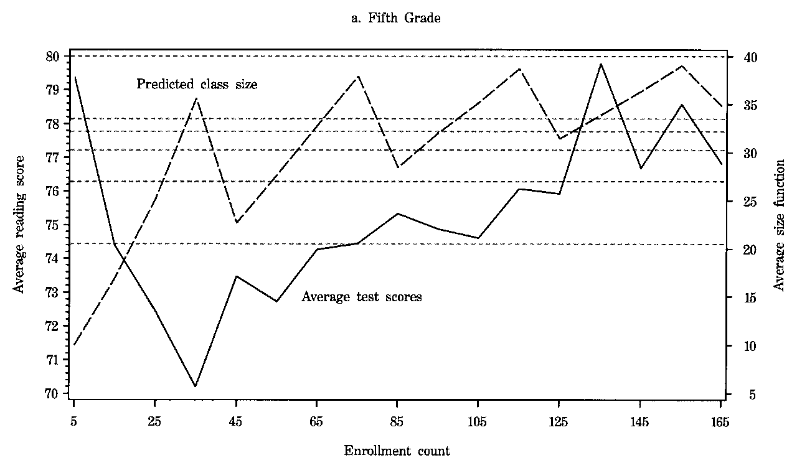
Scores should rise with enrollment overall and dip where predicted class size peaks, roughly a mirror image of the dashed line. The end points can differ, our first point keeps enrollments 5 to 9 and our last stops at 169, where the paper starts at 9 and pools 160 to 190.
PASS, output/figure2_grade4.png was produced
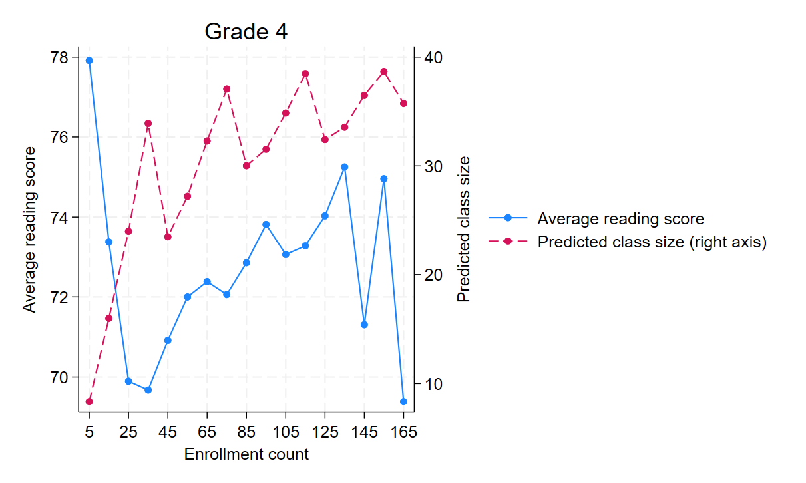
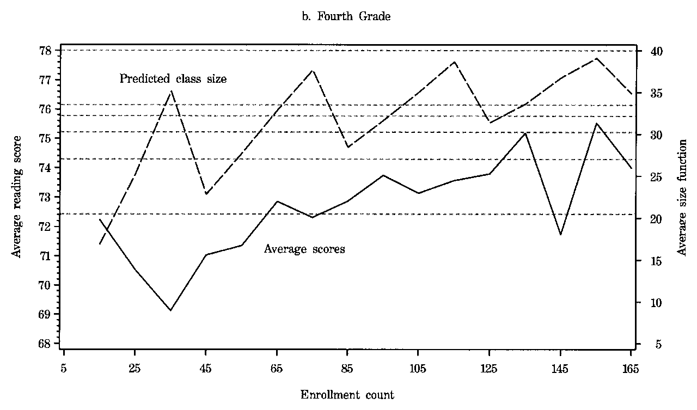
Same reading as grade 5, scores dip where predicted class size peaks. The end points can differ for the same reason as grade 5.
PASS, output/table1.tex was produced
Ours| Quantiles | ||||||||||||
| Variable | Mean | S.D. | 0.10 | 0.25 | 0.50 | 0.75 | 0.90 | |||||
| A. Full sample | ||||||||||||
| 5th grade (2019 classes, 1002 schools, tested in 1991) | ||||||||||||
| Class size | 29.9 | 6.5 | 21.0 | 26.0 | 31.0 | 35.0 | 38.0 | |||||
| Enrollment | 77.7 | 38.8 | 31.0 | 50.0 | 72.0 | 100.0 | 128.0 | |||||
| Percent disadvantaged | 14.1 | 13.5 | 2.0 | 4.0 | 10.0 | 20.0 | 35.0 | |||||
| Reading size | 27.3 | 6.6 | 19.0 | 23.0 | 28.0 | 32.0 | 36.0 | |||||
| Math size | 27.7 | 6.6 | 19.0 | 23.0 | 28.0 | 33.0 | 36.0 | |||||
| Average verbal | 74.4 | 7.7 | 64.2 | 69.8 | 75.4 | 79.8 | 83.3 | |||||
| Average math | 67.3 | 9.6 | 54.8 | 61.1 | 67.8 | 74.1 | 79.4 | |||||
| 4th grade (2049 classes, 1013 schools, tested in 1991) | ||||||||||||
| Class size | 30.3 | 6.3 | 22.0 | 26.0 | 31.0 | 35.0 | 38.0 | |||||
| Enrollment | 78.3 | 37.7 | 30.0 | 51.0 | 74.0 | 101.0 | 127.0 | |||||
| Percent disadvantaged | 13.8 | 13.4 | 2.0 | 4.0 | 9.0 | 19.0 | 35.0 | |||||
| Reading size | 27.7 | 6.5 | 19.0 | 24.0 | 28.0 | 32.0 | 36.0 | |||||
| Math size | 28.1 | 6.5 | 19.0 | 24.0 | 29.0 | 33.0 | 36.0 | |||||
| Average verbal | 72.5 | 8.0 | 62.1 | 67.7 | 73.3 | 78.2 | 82.0 | |||||
| Average math | 68.9 | 8.8 | 57.5 | 63.6 | 69.3 | 75.0 | 79.4 | |||||
| B. +/-5 discontinuity sample (enrollment 36--45, 76--85, 116--125) | ||||||||||||
| 5th grade (471 classes, 224 schools) | ||||||||||||
| Class size | 30.8 | 7.4 | ||||||||||
| Enrollment | 76.4 | 29.5 | ||||||||||
| Percent disadvantaged | 13.6 | 13.2 | ||||||||||
| Reading size | 28.1 | 7.3 | ||||||||||
| Math size | 28.5 | 7.4 | ||||||||||
| Average verbal | 74.5 | 8.2 | ||||||||||
| Average math | 67.0 | 10.2 | ||||||||||
| 4th grade (415 classes, 195 schools) | ||||||||||||
| Class size | 31.1 | 7.2 | ||||||||||
| Enrollment | 78.5 | 30.0 | ||||||||||
| Percent disadvantaged | 12.9 | 12.3 | ||||||||||
| Reading size | 28.3 | 7.7 | ||||||||||
| Math size | 28.7 | 7.7 | ||||||||||
| Average verbal | 72.5 | 7.8 | ||||||||||
| Average math | 68.7 | 9.1 | ||||||||||
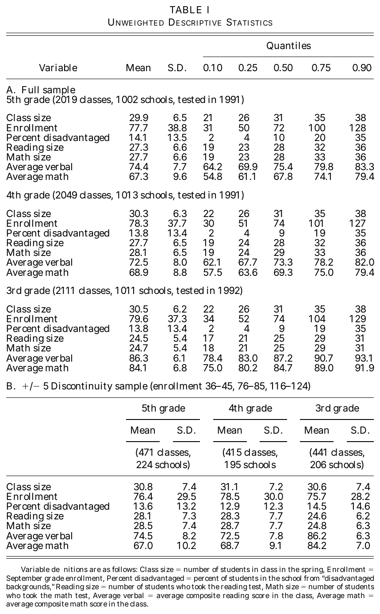
Means, s.d. and quantiles by grade, with the class and school counts in each panel header. There is no grade 3 panel because the grade 3 data isn't provided.
PASS, output/table2.tex was produced
Ours| (1) | (2) | (3) | (4) | (5) | (6) | (7) | (8) | (9) | (10) | (11) | (12) | |
| Reading | Reading | Reading | Math | Math | Math | Reading | Reading | Reading | Math | Math | Math | |
| Class size | 0.221*** | -0.031 | -0.025 | 0.322*** | 0.076* | 0.019 | 0.141*** | -0.053 | -0.040 | 0.221*** | 0.055 | 0.009 |
| (0.034) | (0.026) | (0.033) | (0.040) | (0.036) | (0.042) | (0.035) | (0.028) | (0.032) | (0.039) | (0.036) | (0.040) | |
| Percent disadvantaged | -0.350*** | -0.351*** | -0.340*** | -0.332*** | -0.339*** | -0.341*** | -0.289*** | -0.281*** | ||||
| (0.014) | (0.015) | (0.018) | (0.019) | (0.015) | (0.016) | (0.017) | (0.017) | |||||
| Enrollment | -0.002 | 0.017* | -0.004 | 0.014* | ||||||||
| (0.006) | (0.008) | (0.006) | (0.007) | |||||||||
| Root MSE | 7.55 | 6.12 | 6.12 | 9.37 | 8.33 | 8.31 | 7.94 | 6.65 | 6.65 | 8.66 | 7.82 | 7.81 |
| R-squared | 0.035 | 0.367 | 0.367 | 0.048 | 0.248 | 0.251 | 0.013 | 0.309 | 0.309 | 0.025 | 0.204 | 0.207 |
| N | 2019 | 2019 | 2019 | 2018 | 2018 | 2018 | 2049 | 2049 | 2049 | 2049 | 2049 | 2049 |
| Standard errors in parentheses | ||||||||||||
| Columns 1-6 grade 5, columns 7-12 grade 4. Standard errors clustered by school. | ||||||||||||
| * (p<0.05), ** (p<0.01), *** (p<0.001) | ||||||||||||
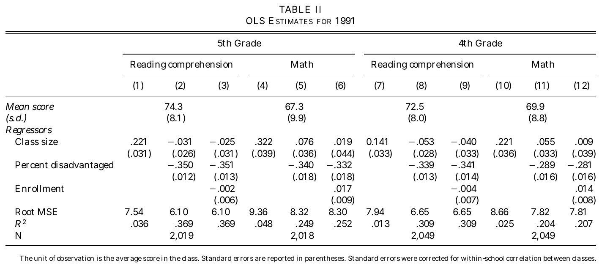
Class size is positive alone and close to zero once percent disadvantaged is added. Our standard errors are clustered by school while the paper's are corrected for within-school correlation, so they differ a little.
PASS, output/table2_se.tex was produced
Ours| Table II, column (2): grade 5 reading on class size and percent disadvantaged | ||||||||||||
| Class size coefficient | -0.031 | |||||||||||
| (i) conventional OLS standard error | 0.0222 | |||||||||||
| (ii) standard error clustered by school | 0.0262 | |||||||||||
| (iii) Moulton-inflated: (i) x sqrt(1 + (m - 1) rho) | 0.0276 | |||||||||||
| m, average classes per school | 2.015 | |||||||||||
| rho, intraclass correlation of residuals | 0.535 | |||||||||||
| N | 2019 | |||||||||||
The paper has no table like this. It is the required comparison of three standard errors for column (2), shown against the paper's Table II.
PASS, output/table3_full.tex was produced
Ours| (1) | (2) | (3) | (4) | (5) | (6) | (7) | (8) | (9) | (10) | (11) | (12) | |
| Class size | Class size | Reading | Reading | Math | Math | Class size | Class size | Reading | Reading | Math | Math | |
| fsc | 0.704*** | 0.542*** | -0.111*** | -0.150*** | -0.009 | -0.125* | 0.772*** | 0.670*** | -0.085** | -0.089* | 0.038 | -0.033 |
| (0.025) | (0.037) | (0.029) | (0.039) | (0.041) | (0.051) | (0.023) | (0.033) | (0.031) | (0.040) | (0.040) | (0.050) | |
| Percent disadvantaged | -0.076*** | -0.053*** | -0.359*** | -0.354*** | -0.354*** | -0.337*** | -0.054*** | -0.039*** | -0.340*** | -0.340*** | -0.292*** | -0.282*** |
| (0.011) | (0.010) | (0.014) | (0.015) | (0.018) | (0.019) | (0.009) | (0.009) | (0.015) | (0.016) | (0.017) | (0.017) | |
| Enrollment | 0.043*** | 0.010 | 0.031*** | 0.027*** | 0.001 | 0.019* | ||||||
| (0.006) | (0.006) | (0.008) | (0.005) | (0.007) | (0.008) | |||||||
| Root MSE | 4.56 | 4.38 | 6.08 | 6.08 | 8.34 | 8.29 | 4.20 | 4.13 | 6.64 | 6.64 | 7.83 | 7.81 |
| R-squared | 0.516 | 0.553 | 0.374 | 0.375 | 0.246 | 0.254 | 0.561 | 0.575 | 0.311 | 0.311 | 0.203 | 0.207 |
| N | 2019 | 2019 | 2019 | 2019 | 2018 | 2018 | 2049 | 2049 | 2049 | 2049 | 2049 | 2049 |
| Standard errors in parentheses | ||||||||||||
| Columns 1-6 grade 5, columns 7-12 grade 4. Standard errors clustered by school. | ||||||||||||
| fsc = enrollment / [int((enrollment - 1)/40) + 1]. | ||||||||||||
| * (p<0.05), ** (p<0.01), *** (p<0.001) | ||||||||||||
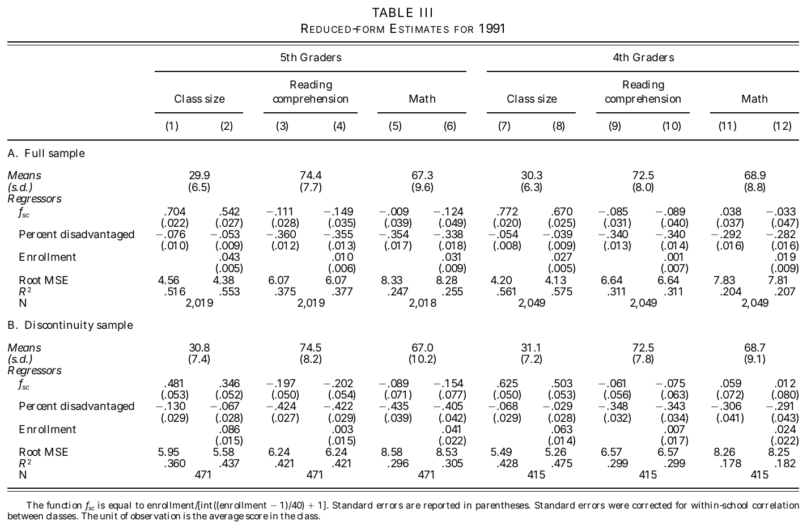
In the class size columns fsc is the first stage, large and positive. In the score columns fsc is the reduced form, mostly negative.
PASS, output/table3_disc5.tex was produced
Ours| (1) | (2) | (3) | (4) | (5) | (6) | (7) | (8) | (9) | (10) | (11) | (12) | |
| Class size | Class size | Reading | Reading | Math | Math | Class size | Class size | Reading | Reading | Math | Math | |
| fsc | 0.481*** | 0.346*** | -0.197*** | -0.202*** | -0.089 | -0.154 | 0.625*** | 0.503*** | -0.061 | -0.075 | 0.059 | 0.012 |
| (0.057) | (0.062) | (0.050) | (0.060) | (0.072) | (0.079) | (0.048) | (0.061) | (0.059) | (0.064) | (0.080) | (0.080) | |
| Percent disadvantaged | -0.130*** | -0.067* | -0.424*** | -0.422*** | -0.435*** | -0.405*** | -0.068* | -0.029 | -0.348*** | -0.343*** | -0.306*** | -0.291*** |
| (0.033) | (0.028) | (0.036) | (0.036) | (0.040) | (0.041) | (0.029) | (0.027) | (0.035) | (0.038) | (0.040) | (0.042) | |
| Enrollment | 0.086*** | 0.003 | 0.041* | 0.063*** | 0.007 | 0.024 | ||||||
| (0.016) | (0.015) | (0.020) | (0.016) | (0.016) | (0.020) | |||||||
| Root MSE | 5.95 | 5.58 | 6.24 | 6.24 | 8.58 | 8.53 | 5.49 | 5.26 | 6.57 | 6.58 | 8.26 | 8.25 |
| R-squared | 0.360 | 0.437 | 0.421 | 0.421 | 0.296 | 0.305 | 0.428 | 0.475 | 0.299 | 0.299 | 0.178 | 0.182 |
| N | 471 | 471 | 471 | 471 | 471 | 471 | 415 | 415 | 415 | 415 | 415 | 415 |
| Standard errors in parentheses | ||||||||||||
| Columns 1-6 grade 5, columns 7-12 grade 4. Standard errors clustered by school. | ||||||||||||
| fsc = enrollment / [int((enrollment - 1)/40) + 1]. | ||||||||||||
| * (p<0.05), ** (p<0.01), *** (p<0.001) | ||||||||||||
The same models on the +/-5 sample, with far fewer classes, so the standard errors are bigger.
PASS, output/table4.tex was produced
Ours| (1) | (2) | (3) | (4) | (5) | (6) | (7) | (8) | (9) | (10) | (11) | (12) | |
| Reading | Reading | Reading | Reading | Reading | Reading | Math | Math | Math | Math | Math | Math | |
| Class size | -0.158*** | -0.277*** | -0.263** | -0.190 | -0.410*** | -0.582** | -0.013 | -0.231* | -0.264* | -0.205 | -0.185 | -0.443 |
| (0.042) | (0.076) | (0.094) | (0.122) | (0.118) | (0.205) | (0.058) | (0.098) | (0.123) | (0.145) | (0.155) | (0.250) | |
| Percent disadvantaged | -0.371*** | -0.369*** | -0.369*** | -0.477*** | -0.461*** | -0.355*** | -0.350*** | -0.350*** | -0.459*** | -0.435*** | ||
| (0.016) | (0.016) | (0.016) | (0.048) | (0.046) | (0.020) | (0.020) | (0.020) | (0.052) | (0.050) | |||
| Enrollment | 0.022* | 0.013 | 0.053 | 0.041*** | 0.063 | 0.079* | ||||||
| (0.009) | (0.026) | (0.032) | (0.012) | (0.036) | (0.037) | |||||||
| Enrollment squared/100 | 0.004 | -0.010 | ||||||||||
| (0.010) | (0.014) | |||||||||||
| Piecewise linear trend | 0.137*** | 0.194*** | ||||||||||
| (0.036) | (0.043) | |||||||||||
| Root MSE | 6.16 | 6.24 | 6.23 | 7.71 | 6.77 | 7.12 | 8.34 | 8.40 | 8.42 | 9.49 | 8.76 | 9.06 |
| N | 2019 | 2019 | 2019 | 1961 | 471 | 471 | 2018 | 2018 | 2018 | 1960 | 471 | 471 |
| Standard errors in parentheses | ||||||||||||
| Grade 5. Columns 1-4 and 7-10 full sample, 5-6 and 11-12 +/-5 discontinuity sample. | ||||||||||||
| 2SLS, fsc instruments class size. Standard errors clustered by school. | ||||||||||||
| * (p<0.05), ** (p<0.01), *** (p<0.001) | ||||||||||||
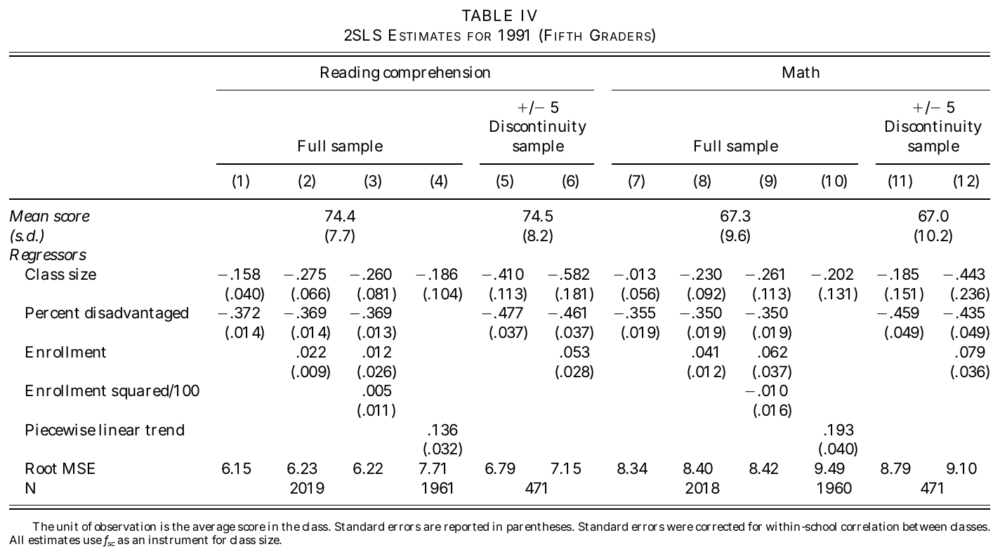
Class size should be negative in the reading columns and in most math columns. Columns 5 and 6 and 11 and 12 use the +/-5 sample.
PASS, output/table5.tex was produced
Ours| (1) | (2) | (3) | (4) | (5) | (6) | (7) | (8) | (9) | (10) | (11) | (12) | |
| Reading | Reading | Reading | Reading | Reading | Reading | Math | Math | Math | Math | Math | Math | |
| Class size | -0.110** | -0.133* | -0.074 | -0.147 | -0.098 | -0.150 | 0.049 | -0.050 | -0.033 | -0.098 | 0.095 | 0.023 |
| (0.040) | (0.061) | (0.068) | (0.089) | (0.095) | (0.131) | (0.052) | (0.075) | (0.084) | (0.099) | (0.126) | (0.158) | |
| Percent disadvantaged | -0.346*** | -0.345*** | -0.346*** | -0.354*** | -0.347*** | -0.290*** | -0.284*** | -0.284*** | -0.299*** | -0.290*** | ||
| (0.016) | (0.016) | (0.016) | (0.036) | (0.038) | (0.018) | (0.017) | (0.017) | (0.042) | (0.042) | |||
| Enrollment | 0.005 | -0.040 | 0.017 | 0.020* | 0.007 | 0.023 | ||||||
| (0.008) | (0.022) | (0.022) | (0.009) | (0.027) | (0.024) | |||||||
| Enrollment squared/100 | 0.021* | 0.006 | ||||||||||
| (0.009) | (0.012) | |||||||||||
| Piecewise linear trend | 0.100*** | 0.130*** | ||||||||||
| (0.026) | (0.029) | |||||||||||
| Root MSE | 6.65 | 6.66 | 6.63 | 8.01 | 6.62 | 6.66 | 7.82 | 7.81 | 7.81 | 8.64 | 8.20 | 8.20 |
| N | 2049 | 2049 | 2049 | 2001 | 415 | 415 | 2049 | 2049 | 2049 | 2001 | 415 | 415 |
| Standard errors in parentheses | ||||||||||||
| Grade 4. Columns 1-4 and 7-10 full sample, 5-6 and 11-12 +/-5 discontinuity sample. | ||||||||||||
| 2SLS, fsc instruments class size. Standard errors clustered by school. | ||||||||||||
| * (p<0.05), ** (p<0.01), *** (p<0.001) | ||||||||||||
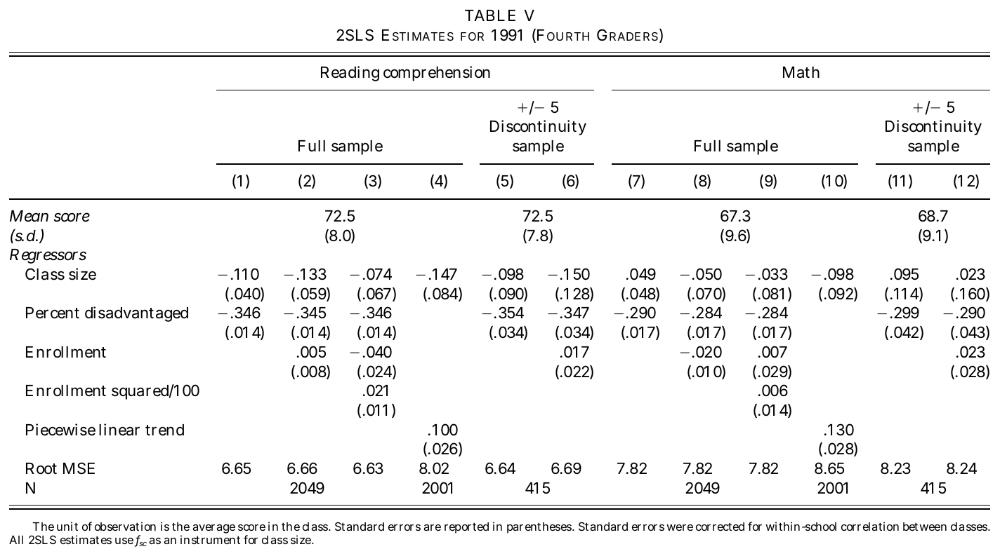
Same layout as Table IV for grade 4. The effects are smaller than in grade 5.
PASS, output/table6.tex was produced
Ours| (1) | (2) | (3) | (4) | (5) | (6) | (7) | (8) | (9) | (10) | (11) | (12) | |
| Reading | Reading | Reading | Math | Math | Math | Reading | Reading | Reading | Math | Math | Math | |
| Class size | -0.687** | -0.588* | -0.451 | -0.596* | -0.395 | -0.270 | -0.175 | -0.234 | -0.380 | 0.018 | -0.118 | -0.247 |
| (0.264) | (0.256) | (0.320) | (0.291) | (0.259) | (0.312) | (0.137) | (0.171) | (0.237) | (0.151) | (0.194) | (0.254) | |
| Percent disadvantaged | -0.464*** | -0.452*** | -0.433*** | -0.416*** | -0.350*** | -0.372*** | -0.291*** | -0.323*** | ||||
| (0.048) | (0.057) | (0.052) | (0.056) | (0.037) | (0.044) | (0.042) | (0.052) | |||||
| Segment 1 (enrollment 36-45) | -5.093 | -4.544 | -10.670* | -7.539* | -6.939* | -12.599** | -1.620 | -2.673 | -6.939* | -1.894 | -3.571 | -7.306* |
| (3.159) | (3.157) | (4.263) | (3.437) | (3.205) | (4.148) | (1.834) | (2.424) | (3.280) | (1.904) | (2.509) | (3.380) | |
| Segment 2 (enrollment 76-85) | -1.639 | -2.178 | -2.959 | -1.567 | -2.170 | -2.894 | -1.517 | -2.160 | -3.833 | -1.153 | -2.495 | -3.960 |
| (1.452) | (1.584) | (1.900) | (1.833) | (2.048) | (2.304) | (1.252) | (1.608) | (2.030) | (1.504) | (1.923) | (2.259) | |
| Root MSE | 7.42 | 7.18 | 8.61 | 9.36 | 9.06 | 10.08 | 6.68 | 6.63 | 8.24 | 8.20 | 8.45 | 9.45 |
| N | 471 | 302 | 302 | 471 | 302 | 302 | 415 | 265 | 265 | 415 | 265 | 265 |
| Standard errors in parentheses | ||||||||||||
| Columns 1-6 grade 5, 7-12 grade 4. Within each block: +/-5 sample with PD, +/-3 sample with PD, +/-3 sample without PD. | ||||||||||||
| 2SLS, instruments z1 z2 z3 = 1[fsc below 32] interacted with the enrollment segments; segment 3 is the omitted segment. | ||||||||||||
| Standard errors clustered by school. | ||||||||||||
| * (p<0.05), ** (p<0.01), *** (p<0.001) | ||||||||||||
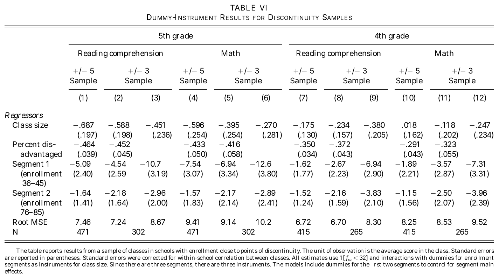
Each block is the +/-5 sample with percent disadvantaged, then the +/-3 sample with and without it, as in the paper.